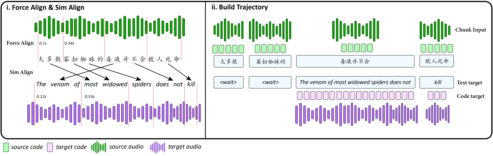
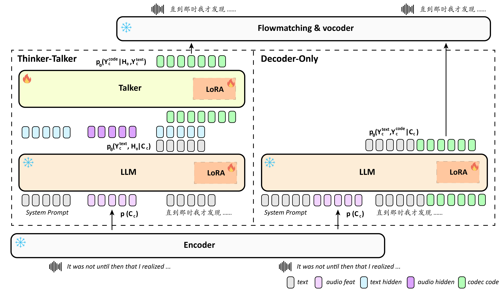
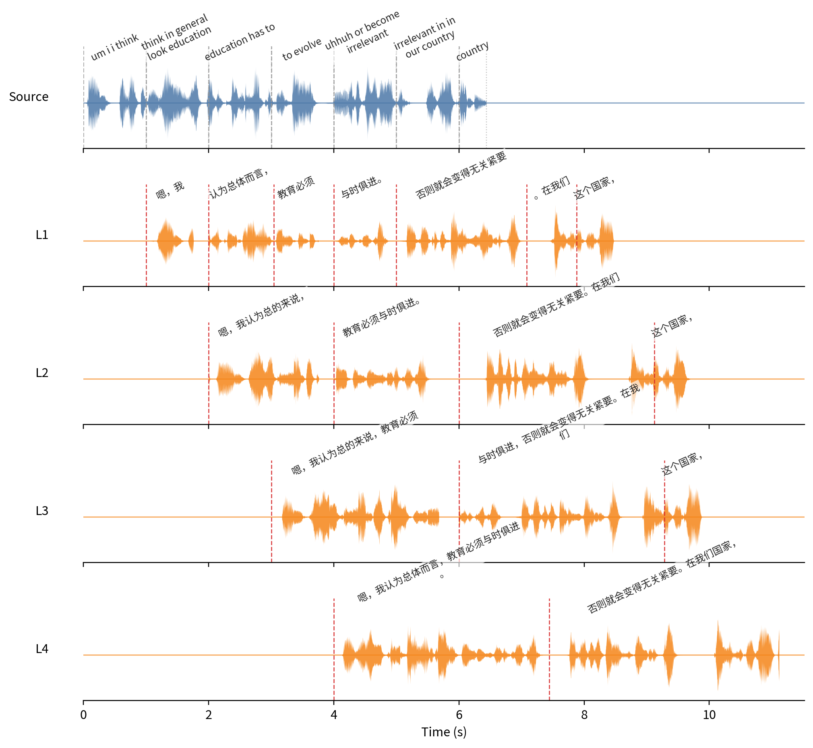
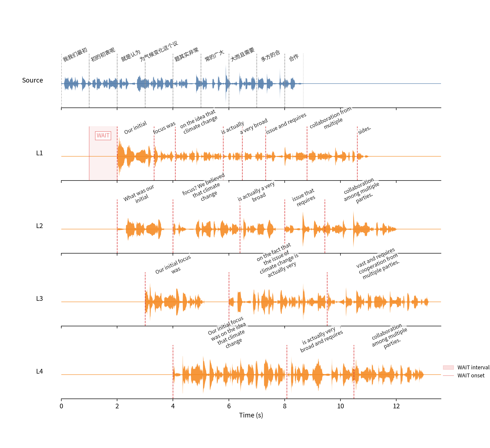
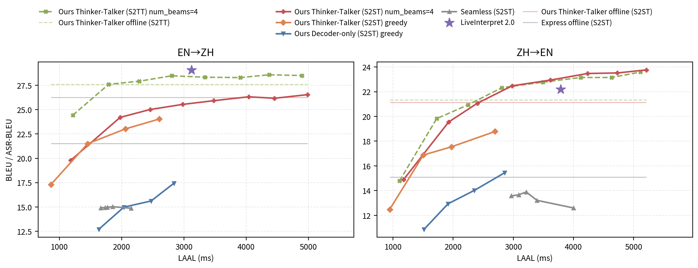
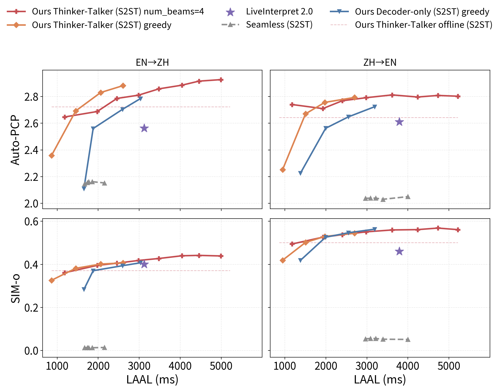
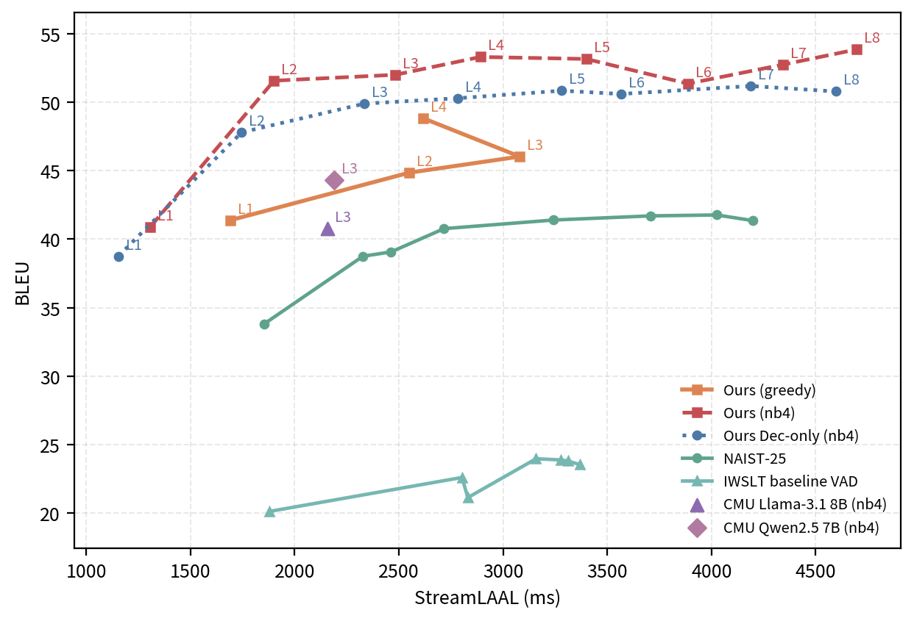

Abstract
Long-form streaming speech-to-speech translation (S2ST) requires incremental, unbounded translation under strict latency constraints. Existing methods typically suffer from sentence-bounded supervision or demand massive paired-S2ST supervision. We introduce a training recipe enabling a speech language model for sentence-level and long-form streaming S2ST using only ~2k hours of paired cross-lingual S2ST data, layered atop auxiliary supervision. Anchored by auxiliary multitask training, our approach remains robust even when the paired-S2ST budget itself is reduced by 90%. Our core contribution, joint text-code trajectory supervision, schedules target text and acoustic semantic codes as a unified commitment path, eliminating the need for separate, unstable speech-side emission controllers. Furthermore, our two-stream Thinker–Talker factorization significantly outperforms unified-decoder baselines by decoupling linguistic reasoning from dense acoustic prediction to mitigate modality interference. Finally, our system achieves highly competitive quality-latency trade-offs on RealSI and ACL60/60-dev, matching state-of-the-art, closed-source S2ST systems such as LiveInterpret 2.0 on ASR-BLEU.
Method

Figure 1. Streaming trajectory construction. Step 1: word-level and cross-lingual alignments establish the earliest valid source prefix for each target word. Step 2: target text and segmented target speech codes inherit monotonized boundaries and are grouped into discrete read/wait/write steps for joint emission.

Figure 2. Matched backbone comparison. Thinker–Talker (left) and Dec-only (right) share an identical speech encoder, base LLM backbone (with independent LoRA adapters), semantic-code tokenizer, and frozen flow-matching/vocoder backend.
Sentence-Level Cases Visualization
Forced-aligned source chunks and multi-latency (m1–m4) target trajectories.
| marks commitment boundaries.
Stereo: L = source, R = translation with a leading
1 / 2 / 3 / 4 s delay on the right channel.
en→zh · Case 1

| m | Source text | Translated text | Audio (L/R) |
|---|---|---|---|
| m1 | um i i think | think in general look education | education has to | to evolve | uhhuh or become irrelevant | irrelevant in in our country | country | 嗯，我 | 认为总体而言， | 教育必须 | 与时俱进。 | 否则就会变得无关紧要 | 。在我们 | 这个国家， | |
| m2 | um i i think in general look education | education has to evolve | uhhuh or become irrelevant in in our country | country | 嗯，我认为总的来说， | 教育必须与时俱进。 | 否则就会变得无关紧要。在我们 | 这个国家， | |
| m3 | um i i think in general look education has to | to evolve uhhuh or become irrelevant in in our country | country | 嗯，我认为总的来说，教育必须 | 与时俱进，否则就会变得无关紧要。在我们 | 这个国家， | |
| m4 | um i i think in general look education has to evolve | uhhuh or become irrelevant in in our country | 嗯，我认为总体而言，教育必须与时俱进。 | 否则就会变得无关紧要。在我们国家， |
zh→en · Case 2

| m | Source text | Translated text | Audio (L/R) |
|---|---|---|---|
| m1 | 我我们最初 | 初的初衷呢 | 就是认为 | 为气候变化这个议 | 题其实非常 | 常的广大 | 大而且需要 | 多方的合 | 合作 | Our initial | focus was | on the idea that climate change | is actually | a very broad | issue and requires | collaboration from multiple | sides. | |
| m2 | 我我们最初的初衷呢 | 就是认为气候变化这个议 | 题其实非常的广大 | 大而且需要多方的合 | 合作 | What was our initial | focus? We believed that climate change | is actually a very broad | issue that requires | collaboration among multiple parties. | |
| m3 | 我我们最初的初衷呢就是认为 | 为气候变化这个议题其实非常的广大 | 大而且需要多方的合作 | Our initial focus was | on the fact that the issue of climate change is actually very | vast and requires cooperation from multiple parties. | |
| m4 | 我我们最初的初衷呢就是认为气候变化这个议 | 题其实非常的广大而且需要多方的合 | 合作 | Our initial focus was on the idea that climate change | is actually very broad and requires | collaboration among multiple parties. |
Sentence-Level Cases
Sentence-level samples from our human evaluation set. Compare Ours (m2 / m5) with LiveInterpret and Seamless-Streaming (plain mono audio). Translation text is obtained by ASR: Paraformer-zh for en→zh outputs, Whisper-large-v3 for zh→en outputs.
en→zh · Case 1
Source text: Without the ability to do that, um towns on the shoreline aren't left with any real incentive structure to do restrictive zoning, because that's where their bread is is buttered,
Reference: 但如果没有这个能力，海岸线上的城镇就没有任何激励机制来限制区域划分，因为这是他们的利益所在。
Translation text: ASR via Paraformer-zh
| System | Translation text (ASR) | Audio |
|---|---|---|
| Ours (m2) | 海岸线上的成镇在有真正的激励机制来是限制性分区因为今天的源就在这里 | |
| Ours (m5) | 没有这种能力海岸线上的城镇就没有真正的激励机制来实施限制性分区因为那才是他们的生计所在 | |
| LiveInterpret | 如果没有这种能力沿海城镇就没有真正的激励机制来进行限制性分区因为那是他们的归基所在 | |
| Seamless-Streaming | 没有能力做那事在海岸线上的城镇没有留下任何真正的激励结构来做限制请区分因为因为那是因为那边的面包是蚌 |
zh→en · Case 1
Source text: 可以说在这个意义上，身体它本身就是携带着一种，一种原始性的意义，
Reference: In this sense, the body itself carries a kind of original meaning.
Translation text: ASR via Whisper-large-v3
| System | Translation text (ASR) | Audio |
|---|---|---|
| Ours (m2) | In this sense, the body itself carries a kind of primitive meaning. | |
| Ours (m5) | In this sense, the body itself carries a primitive meaning. | |
| LiveInterpret | In this sense, | |
| Seamless-Streaming | In this sense, the body itself carries with it a kind of primal meaning. |
en→zh · Case 2
Source text: Because so much of their time has to be spent on boiling things down to this standardized box that everybody is placed in.
Reference: 因为他们得花太多时间将所有学生置于这个标准化的框框里。
Translation text: ASR via Paraformer-zh
| System | Translation text (ASR) | Audio |
|---|---|---|
| Ours (m2) | 因为他们大部分时间都必须花在将事物简化为这种标准化的框架上而每个人都被置于其中 | |
| Ours (m5) | 因为他们的大部分时间都必须花在将事物简化为这种一个人都被放入其中的标准化盒子上 | |
| LiveInterpret | 因为他们大部分时间都必须花在将事情简化为这个标准化的框架上每个人都被框在其中 | |
| Seamless-Streaming | 因为那么多事件都得花在主东西上到这个标准化的盒子里里 |
zh→en · Case 2
Source text: 对，呃，它就这个就就就，就显现了，于是你才能注意到这个，呃，自己的这个心，心慌啊，什么心跳啊之类的。
Reference: and just appears, and then you will notice your own flustered feeling, heartbeats, etc.
Translation text: ASR via Whisper-large-v3
| System | Translation text (ASR) | Audio |
|---|---|---|
| Ours (m2) | yes, he has just showed up. That's why you need to know this as your own flight, your heartbeat and so on. | |
| Ours (m5) | Yes, he just just showed up. That's why you need to pay attention to this, your heart palpitations, your heartbeat and so on. | |
| LiveInterpret | Yes, it just shows up. So you can notice that your heart palpitations | |
| Seamless-Streaming | It's just that this is what it looks like. So you can notice this panic of your own. This panic of your own. What kind of heartbeat? |
en→zh · Case 3
Source text: The great sculptor Lorenzo Ghiberti used the term "historia" for the reliefs on the Baptistery doors o- of the Cathedral of Florence.
Reference: 伟大的雕刻家洛伦佐·吉贝尔蒂用“历史画”一词称佛罗伦萨大教堂洗礼堂门上的浮雕。
Translation text: ASR via Paraformer-zh
| System | Translation text (ASR) | Audio |
|---|---|---|
| Ours (m2) | 伟大的雕塑帝亚洛伦佐吉贝尔蒂用历史一词去描述西里塘上的福地哦 | |
| Ours (m5) | 伟大的雕塑家洛伦佐吉贝尔蒂在佛罗伦萨大教堂西临门的浮雕上使用了历史一次 | |
| LiveInterpret | 伟大的雕塑家洛伦佐吉贝尔蒂使用了历史这个词来描述洗礼堂门上的浮雕那是佛罗伦萨大教堂的一部分 | |
| Seamless-Streaming | 大雕塑加洛renzgyberty使用了这个词histstory历史来形容佛罗伦萨萨大教堂的悉尼堂的雕塑 |
zh→en · Case 3
Source text: 所以制片人领了最佳影片奖，因为他才是电影的第一负责人。
Reference: The producer claims the Best Picture because they are the first person-in-charge of the film.
Translation text: ASR via Whisper-large-v3
| System | Translation text (ASR) | Audio |
|---|---|---|
| Ours (m2) | The producer won the best picture award because he is the first person in charge of the film. | |
| Ours (m5) | So the producer won the best picture award because he is the first person responsible for the film. | |
| LiveInterpret | So the producer got it, for best picture, because he is the first person in charge of the film. | |
| Seamless-Streaming | So the producer got the best screenplay award because he was the first person in charge of the film. |
Long-Form Examples
Document-level streaming outputs (RealSI Technology / Entertainment · m2 / m3 / m5). Stereo: L = source, R = translation with a leading 2 / 3 / 5 s delay on the right channel (use headphones).
en→zh
| Topic | m | Audio (L/R) |
|---|---|---|
| Technology | m2 | |
| Technology | m3 | |
| Technology | m5 | |
| Entertainment | m2 | |
| Entertainment | m3 | |
| Entertainment | m5 |
zh→en
| Topic | m | Audio (L/R) |
|---|---|---|
| Technology | m2 | |
| Technology | m3 | |
| Technology | m5 | |
| Entertainment | m2 | |
| Entertainment | m3 | |
| Entertainment | m5 |
Quality–Latency Trade-offs

Figure 3. RealSI sentence-level content trade-off. Dashed curves denote S2TT text BLEU, solid curves denote S2ST ASR-BLEU, and horizontal lines mark offline reference lines.

Figure 4. RealSI sentence-level acoustic quality trade-off: A.PCP and SIM-O against LAAL for En→Zh and Zh→En.

Figure 5. ACL60/60-dev long-form streaming S2TT trade-off: BLEU against StreamLAAL for En→Zh and Zh→En.
RealSI ASR-BLEU vs LiveInterpret
| Type | Direction | m2 | m3 | m4 | m5 | m6 | LiveInterpret |
|---|---|---|---|---|---|---|---|
| Sent | En→Zh | 24.21 | 25.01 | 25.54 | 25.92 | 26.32 | 29.09 |
| Sent | Zh→En | 19.55 | 21.07 | 22.47 | 22.94 | 23.47 | 22.19 |
| Doc | En→Zh | 26.58 | 28.42 | 29.69 | 30.04 | 29.73 | 29.33 |
| Doc | Zh→En | 22.40 | 22.62 | 24.37 | 26.53 | 25.60 | 26.80 |
Numbers from the paper’s RealSI streaming S2ST evaluation. Bold marks the best in each row.
BibTeX
@misc{he2026simuls2stomni,
title = {SimulS2ST-Omni: Data-Efficient Streaming Speech-to-Speech Translation via Explicit Trajectory Supervision},
author = {He, Rongshen and Liang, Xinyu and Chen, Dekun and Li, Jiaqi and Chen, Mingjie and Wu, Zhizheng},
year = {2026},
eprint = {XXXX.XXXXX},
archivePrefix = {arXiv},
primaryClass = {cs.CL},
note = {arXiv preprint; identifier TBD}
}